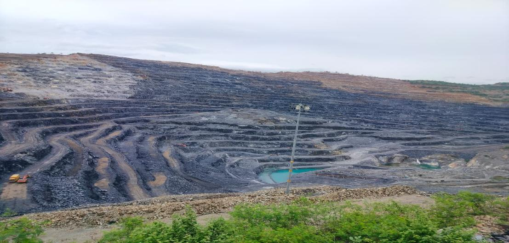
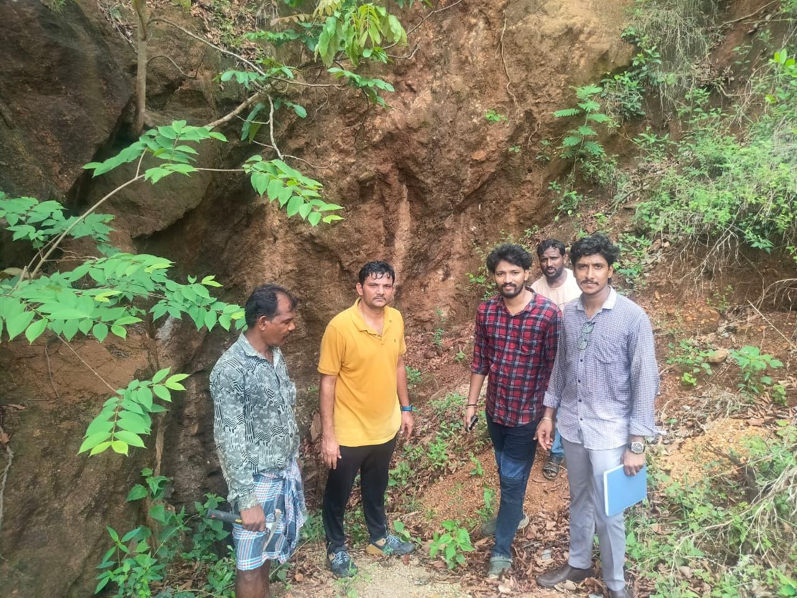
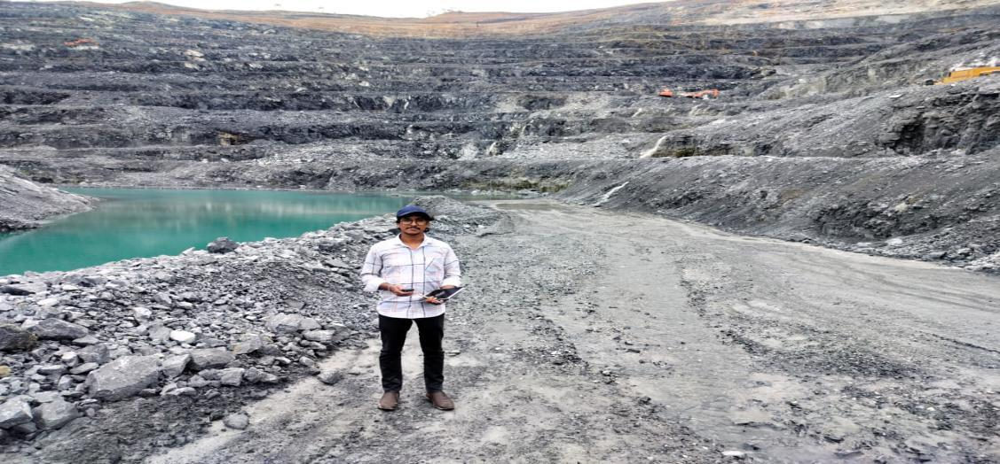
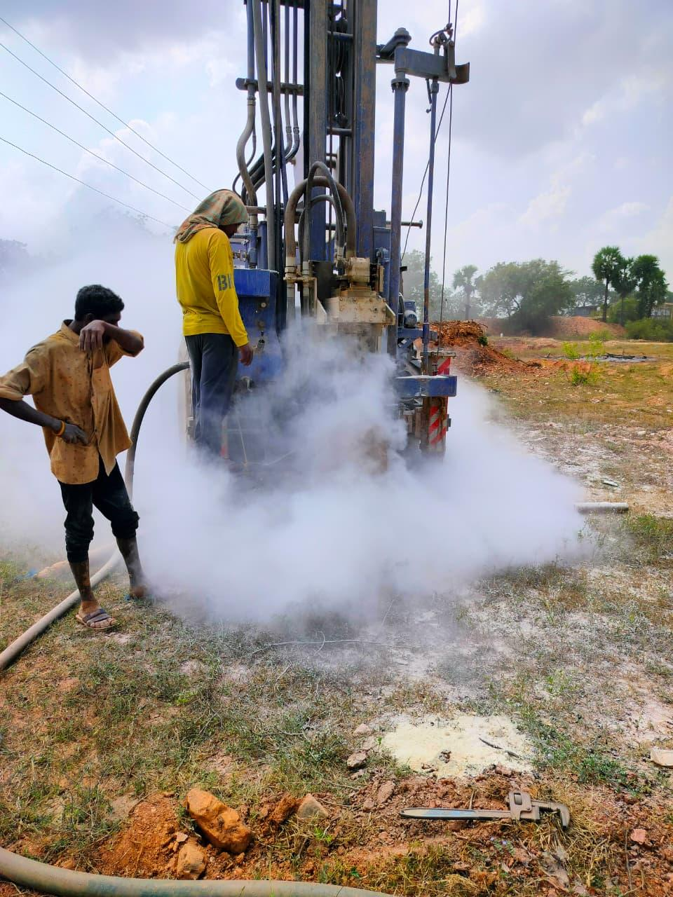
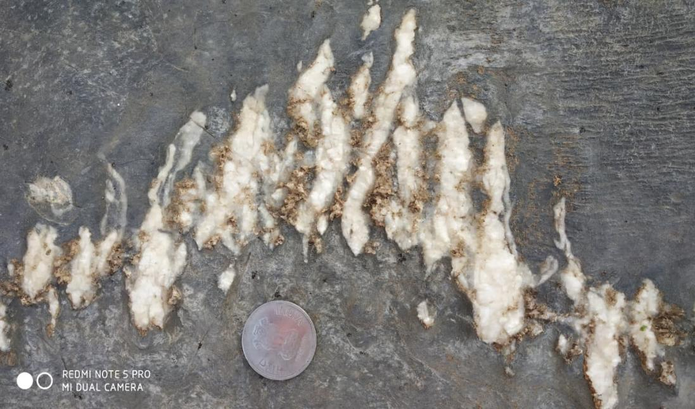

Engineering the Future of Mining
Geological exploration, mineral investigation and mining consultancy services delivered with technical excellence, safety and a commitment to responsible resource development.


Delivering Innovative Mining Services and Geological Expertise
GMS Solutions (The Geo Masters) supports the mineral exploration lifecycle through geological investigation, geophysical and geospatial services, exploration drilling, mining plans and technical reporting.
Our approach combines field knowledge, scientific methods and modern tools to help clients make informed decisions and develop mineral resources responsibly.
Comprehensive Mining & Geological Services
Integrated solutions across mineral exploration, geological investigation and mine development.
Mineral Investigation
Field investigation, mineral assessment and geological interpretation.
02Geological Mapping
Geological mapping, exploration planning and resource evaluation.
03Exploration Management
Structured exploration programmes, field coordination and supervision.
04Surveying & Sampling
Surveying, sampling, measurement and spatial documentation.
05Resource Evaluation
Mineralogy, petrology and technical assessment support.
06Environmental Services
Hydrogeology, environmental assessment and site suitability.
Delivering Reliable Mining Solutions with a Strong Focus on Safety, Efficiency and Sustainable Development
- Experienced geological professionals
- Scientific and systematic approach
- Safety-first field practices
- Integrated GIS and technical expertise
- Reliable project documentation
Explore Our Latest Mining Projects
Selected field environments and project capabilities demonstrating our technical expertise.
Mineral Exploration
Geological investigation · Field assessment

Quarry Operations
Mine planning · Site evaluation

Mining Site Development
Technical support · Operational studies

Stone Quarry Assessment
Surveying · Geological reporting
What Our Clients Say
GMS brought a systematic and professional approach to our geological investigation requirements. Field coordination and technical documentation were valuable to the assignment.
Client Feedback · Geological ServicesThe team demonstrated strong field understanding and responsive project support throughout the engagement, with attention to technical detail and communication.
Client Feedback · Mining ConsultancyFrequently Asked Questions
What geological and mining services does GMS provide?
Mineral investigation, geological mapping, GIS and AutoCAD, mineralogy and petrology, sampling, surveying, exploration drilling, mining plans, environmental services and feasibility support.
Can GMS support mineral exploration projects?
Yes. GMS supports field investigation, geological mapping, sampling, surveys, drilling coordination and technical reporting.
Does GMS prepare mining plans and technical reports?
Yes. GMS offers mining plans, exploration schemes and technical documentation based on project requirements and applicable frameworks.
Which locations does GMS serve?
GMS is based in Hyderabad, India. Contact the team to discuss project location and mobilisation requirements.
How can I request a consultation?
Call +91 9949194365 or +91 9542325926, or email gms.geosolutions175622@gmail.com.
From Our Knowledge Hub
Geological and mining insights, field practices and technical perspectives.
Role of Geological Exploration in Mineral Resource Development
Geology as the foundation for informed mineral development.
Integrated Mining Consultancy and Technical Support
Coordinated technical services for project planning and execution.
Modern Geospatial Tools in Geological Investigation
Mapping and spatial information to support field decisions.